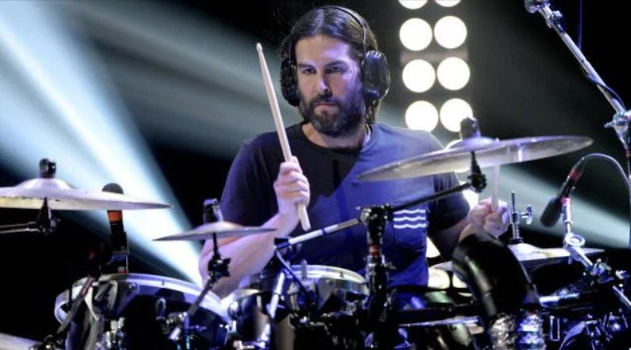

One More Light
One Step Closer to the Edge
Menu
Chester Bennington
Mike Shinoda
Dave Farrell
Brad Delson
Joe Hahn
Rob Bourdon
Information about an artist

Main Facts
Drummer of Linkin Park, one of the long-term/founding members of the band.
His style combines a traditional rock groove with elements of hip-hop rhythms, which reinforces the band's sound..
Responsible for rhythmic stability in live performances and contribution to percussion arrangements.
Rob Bourdon
Hybrid Theory Forever
LINKIN PARK